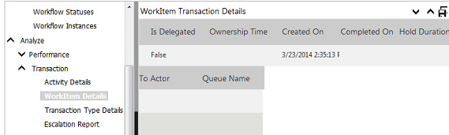

No
The Analyze reports constitute the reports available out-of-the-box in AVEVA Work Tasks. It has two sets of reports, Transaction and Execution.
The Analyze section also shows Performance Analysis reports if the performance analysis configuration has been set for the workflow. For more information, refer to BAM Configuration and Performance Analysis Reports.
Transaction Reports
These reports present workflow execution information related to transactions in the workflow. There are seven types of reports in this group:
Activity Details
This report presents details related to activity-level transactions. The following image shows an Activity Details report. It has been split into three for convenience.
Work Item Details
This report presents details related to work item-level transactions. The following image has been split into three for viewing convenience.

Transaction Type Details
This report presents details of different transaction types as shown in the following example.
Escalation Report
Description:
The Escalation Report gives in-depth details regarding escalations. It shows the user name, date, timeout settings, escalation type (Recurring or Non-Recurring) and task, workflow, and application details. The report has a drill down feature which shows the Process execution view for the instance. Double-click the data displays the Process execution view.
Location:
Selecting Reports from the Enterprise Console menu displays the Business Activity Monitoring (BAM) interface. In the BAM left panel tree view, click Analyze and then Transaction. Finally, click Escalation Report.
Report Parameters:
By selecting the ‘From’ date and ‘To’ date, one can get the details of the escalations that occurred for the given date range. You can see the Process execution view for the instance by double-clicking the data.
Report view:
It shows the user name, date, timeout settings, escalation type (Recurring or Non-Recurring) and task, workflow, and application details. The Escalation Report has the column filter feature available in the other reports.
Double-clicking the data for the instance displays the Process execution view.
Process execution view:
Scenario:
John Smith works as an Administrator for ‘XYZ’ organization. He wants to monitor the escalations that occurred in the workflow for a given date range. By using the Escalation Report, he can get the details of the same and take the necessary steps.
My Activities
Description:
Do you ever want to see the activities that have been acted upon? The My Activities option is useful to keep track of the activities that you have acted on. By default, AVEVA Work Tasks keeps a copy of workflow history that you have acted on in My Activities. Based on security rights, the My Activities option is displayed.
Location:
Selecting Reports from the Enterprise Console menu displays the Business Activity Monitoring (BAM) interface. In the BAM left panel tree view, click Analyze and then Transaction. Finally, click My Activities.
My Activities will give in-depth details regarding activities. It shows the Instance Id, Activity Name, Activity Type, Action Status, Assigned On, Inlink Action Output, Updated On, Ended On, Output, and Workflow details.
It has a drill-down feature which shows the ‘Process execution view’ for the instance. Double-clicking the data brings up the Process execution view for the workflow.
Activity Time Details
This report presents details related to Activity Time transactions, as shown in the following image. The report displays the time taken by each activity and its average time. This is related to all the Activities.
Activity Performance Details
This report presents details related to Activity Performance transactions, as shown in the following image. This is only related to the Human Activities.
The report displays in descending order, from Best Time (least time taken to execute a particular activity) to Slow Time (most time taken to execute a particular activity).